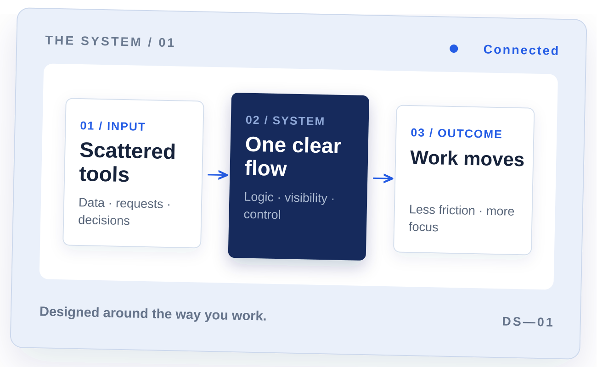

Automation & system optimization
Make the complex work together.
We connect tools, information, and people into systems that are easier to understand, operate, and improve.

The idea
Good systems make the next step obvious. We find the gaps between your tools and processes, then build a better way for work to move.
What we do
All services Practical systems for real work.
How we think
See the whole system. Fix the right part.
A useful solution begins with the actual handoffs, decisions, and constraints. That is where we start.
Our approachExplore
More ways to move forward.
Start here
Start a conversation